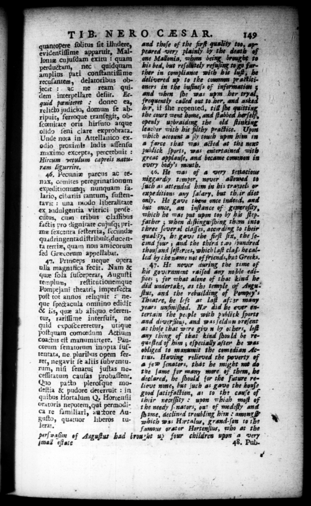

| : g | ; | | 5 | | | | 149 TIB. NERO CASAR, ntopere ſolitus ſit illndere, and thoſe of the fin quality too, Tricentiſime 2 „ Mal- peared very plainly by the death of loniæ cujuſdam exitu: quam ene Mallonia, uh — broug be to ductam, nec quidquam bis bed, but reſoltely refu/eng ts g furamplias pati conſtantiſſi me ther in compliance wich bu ; be © recuſantem, delatoribus objecit: 2c ne ream quidem interpellare defiir, Ecguid paniteret done ea, relicto judicio, domum ſe abripuit, ferroque tranſegit, obſcœenitate oris hirſuto atque olido ſeni clare exprobrata, Unde nota in Attellanico exodio proximis lud is aſſenſu maximo excepta, percrebuit: Hircum vetulum capreis naturam ligurrire, | 46, Pecuniæ parcus AC tenax, comites petegrinationum expedit ionumq; nunquam ſalario, cibariis tantum, ſuſtentavic : una modo liberalitate ex mdulgentia vierici profecutus, cum tribus claſhbus factis pro dignitate cujuſqʒ primz ſexcuta ſeſtertia, ſecundæ quadringentadiſtribuſt ducenta tertiæ, quam non amicorum ſed Græcorum appellabat. 47. Princeps neque opera ulla magnifica fecit. Nam & que ſola ſuſceperar, Auguſti delivered 7 to the comm pr atitioners in the buſineſs of 1 ws and when ſh: was upm her try frequently called out to her, and ashed her, it the repented, til ſhe quitti the court went home, and ftabbe herſelf, ou y uwpbraiding the old flinking acher with his filthy practice. Upon which account & jly touch ubm him in a farce that was acted at the next publick ſports, was entertained with great applauſe, and became camo in every body's mouth. 46. He was of 4 very fFellacious niggerdy temper, never allowed td ſuch as attended him in his travels or expeditions any ſalary, but th.ir diet 5. He gave them once indeed, and but once, an inſtance of | gemeroſity, which he was put upon too by bis ſtep. father; when d:flinguiſhing them into —_ — claſſes, 75 72 20 7 2, hb: gave the firſe ſix, the ſe— four; = the third t wo /nunared thouſand ſeſterces, which laſt claſ> he called by the name not of friends, bus Greeks, 47. He never auring the rime of his go virument raiſed any noble edifees ; for what alone of that kind be ” = remplum reſtitutionemque Pompejati theatri, imperfecta — — oy Fe Fong — poſt tot annos reliquit - ne- * bs ”y pe. lf af: 2 que ſpectacula omnino edidic Jears unfiniſhed. Xs bd &o ours & 1:s, quæ ab aliquo ederentur, rariſſime interfuit, ne and dier ions, and was ſeldun preſent rertain the peiple with publick ſports quid expolcereretur, utique 9 , poltquam edu Actium * thoſe (Bat wire * by 0: bers, 2 conctne off Da any thing of that kind ſhould be reW_—_ 2 OO. gu- ſtea him; eſpecially after be was corum ſenatorum mopia ſuſtentata, ne pluribus opem ferret, negavit ſe aliis ſubventurum, niſi ſenatui juſtas neceſſitatum cauſas probaſſent. (2 patto pleroſque modeſtia & pudore deterruit: in quibus Hortalum Q. Horcenfii oratoris nepotem, qui permoGica re familiari, au Tore Augafto, quatuor liberos tulerat. obliged to manumit the comedian Actu. Having relieved the poverty 4 few ſ:nators, that he might not the ſame 2 many more of them, be declared, he ſbould for the future relieve nme, but juch as gave the bouſ⸗ good ſatisfattion, ar to the cauſe of ther neceſſity dünn which moſt of t he needy j-nators, on: of med:fly and ſhame, azclined troubling him eam & which was Hortalus, grand-ſon to 15: famous orator Hortenſius, who at the gol 7 of Auguſtus bad iron 2h ah four childres upon 4 8, . Pl s
